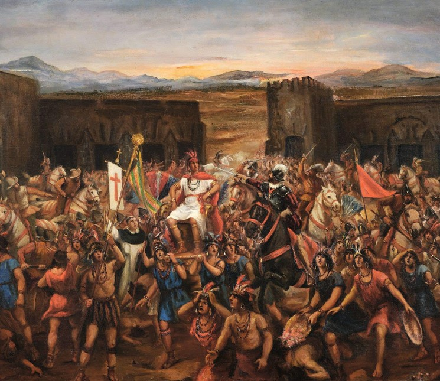
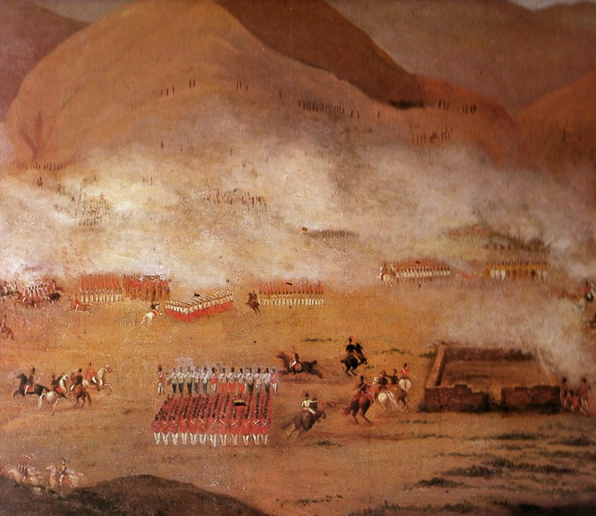

Histoire du drapeau

Le drapeau du Pérou a été adopté par le gouvernement péruvien en 1821 ou 1825. C'est un drapeau
bicolore
composé de deux bandes rouges encadrant une bande blanche. Selon son usage, la bande centrale
peut
porter différents emblèmes.
Le drapeau est fêté le 7 juin, date anniversaire de la bataille d'Arica en 1880.
Histoire du Pérou

1. Les grandes civilisations andines (de 3000 av. J.-C. à 1532)
L'histoire du Pérou commence bien avant les Incas, à Caral, considérée par l'UNESCO comme le plus
ancien centre de civilisation des Amériques. Cette société se développait déjà vers 3000 av.
J.-C. sur la côte. D'autres cultures ont suivi, comme Chavín, Paracas, Mochica, Nazca, Huari et
Chimú, chacune avec son art, ses temples et ses techniques agricoles adaptées aux montagnes et
au désert.
Au départ, les Incas n'étaient qu'un petit peuple andin installé autour de Cusco. Sous le règne
de Pachacuti (1438-1471), leurs conquêtes s'accélèrent et ils bâtissent le plus grand empire de
l'Amérique précolombienne, relié par des milliers de kilomètres de routes et célèbre pour des
sites comme le Machu Picchu. Les Incas adoraient le Soleil (Inti), à qui ils dédiaient chaque
année une grande fête, l'Inti Raymi, encore célébrée aujourd'hui à Cusco.
2. La conquête espagnole et la vice-royauté (1532-1821)
Lorsque les Espagnols arrivent, l'empire inca est affaibli par une guerre de succession entre
deux frères, Huáscar et Atahualpa. En novembre 1532, Francisco Pizarro capture Atahualpa à
Cajamarca. La résistance dure plusieurs décennies et ne prend fin qu'en 1572, avec l'exécution
du dernier Inca, Túpac Amaru I.
Le Pérou devient alors une vice-royauté espagnole, avec Lima pour capitale. Cette période est
marquée par l'exploitation des mines d'argent, le travail forcé des populations indigènes et
l'arrivée de l'Église catholique, mais aussi par un fort métissage entre Espagnols, indigènes et
Africains réduits en esclavage. Le mécontentement grandit peu à peu, jusqu'à la grande révolte
de Túpac Amaru II en 1780-1781, qui annonce le mouvement d'indépendance.


3. L'indépendance et le Pérou moderne (1821 à aujourd'hui)
Le 28 juillet 1821, José de San Martín proclame l'indépendance du Pérou à Lima. Mais la guerre
continue : les troupes espagnoles ne sont définitivement vaincues qu'en 1824, lors des batailles
de Junín et d'Ayacucho.
Le XIXe siècle est agité : instabilité politique, boom économique grâce au guano, puis guerre du
Pacifique contre le Chili (1879-1884). Au XXe siècle, le pays alterne croissance et crises. Les
années les plus sombres sont celles du conflit armé interne, qui fait près de 70 000 morts entre
1980 et 2000. Aujourd'hui, le Pérou reste marqué par une forte instabilité politique, mais il
est connu dans le monde entier pour son patrimoine culturel et sa gastronomie.